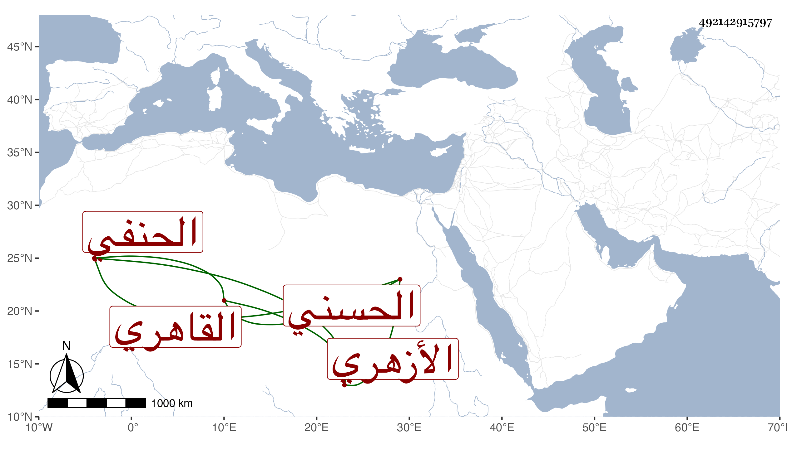

0902Sakhawi.DawLamic.ITO20230111-ara1.EIS1600.492142915797
Biography ID: 492142915797
49
محمد بن عبد الرحمن المحب الحسني القاهري الأزهري الحنفي . حفظ القرآن وغيره واشتغل وتميز في الأصلين والعربية والمنطق وغيرها وأقرأ وقتا ، وممن أخذ عنه في العربية حسن الأعرج بل أخذ عنه أحد الأفراد ابن بردبك والمحب بن هشام . وبلغني أن الكافياجي كان يجله واستقر في مشيخة الجوهرية الأزهرية ، وناب في القضاء وكان ساكنا وقورا . مات في ربيع الأول سنة اثنتين وسبعين وهو خال المحب بن الجليس الحنبلي .
